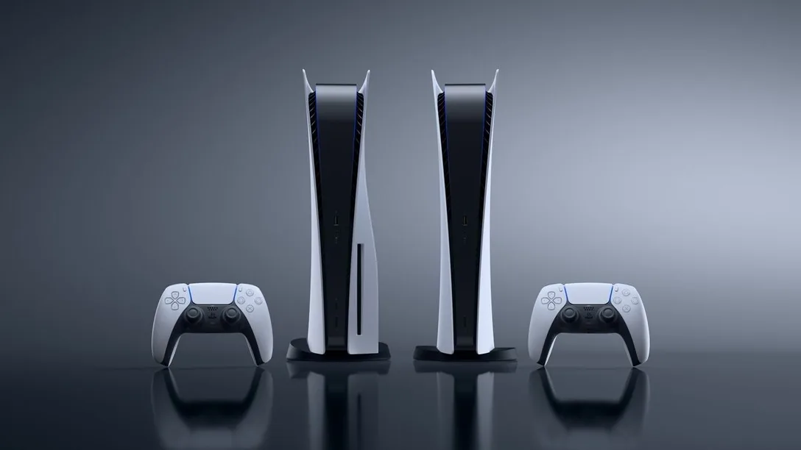
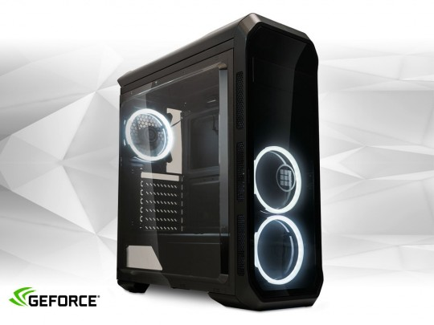

Gaming perifériák.
Playstation:
Az konzol Japánban 1994 december 4-én, Észak Amerikában 1995 szeptember 9-én,
Európában 1995 szeptember 29-én jelent meg. Az első játékok fejlesztői leginkább a Namco
és a Sony voltak. Az első játékok között szerepelt a Tekken, a Battle Arena Toshinden, a Warhawk,
az Air Combat, a Philosoma és a Ridge Racer. A Namco játékok többsége az akkori játéktermi
programok direkt átiratai voltak. Ez is nagyban hozzájárult a gép sikereihez.
Xbox:

Az Xbox egy hatodik generációs videójáték-konzol, melyet a Microsoft gyártott. 2001. november
15-én jelent meg Észak-Amerikában, 2002. február 22-én Japánban és 2002. március 14-én
Ausztráliában és Európában az Xbox 360 elődjeként. Ez volt a Microsoft első próbálkozása
hardverfejlesztőként a játékkonzol piacon, ahol a Sony PlayStation 2-vel, a Sega Dreamcasttal
és a Nintendo GameCube-bal kellett szembenéznie. A beépített Xbox Live szolgáltatás lehetővé
tette a játékosok számára az internetes játékot.
PC:
A "játékszámítógépek" speciális személyi számítógépek, amelyeket videojátékok lejátszására terveztek. A játékgépek általában különböznek a mainstream számítógépektől, mivel nagy teljesítményű videokártyákat és nagy magszámú központi processzorokat használnak, amelyek feláldozzák az energiahatékonyságot a nyers teljesítmény érdekében. A játék PC-ket más igényes feladatokhoz is használják, például a videoszerkesztéshez. Sok játékos és számítógép-rajongó úgy dönt, hogy túlteljesíti CPU-ját és GPU-ját, hogy extra teljesítményt nyerjen. Bármelyik processzor túlhúzásához szükséges hozzáadott energiafelvétel gyakran további hűtést igényel, korszerűbb léghűtés vagy vízhűtés alkalmazásával.